Head-up Cardboard - A Google Cardboard inspired 3d head-up display
DIY stereoscopic holography
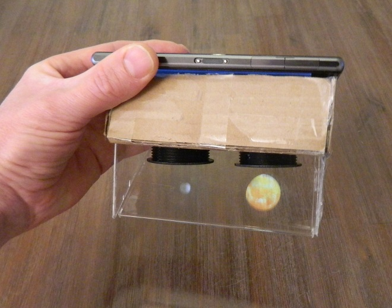
OK Cardboard
By design, in VR you are not connected with the real world - you cannot see the real world and the VR world at the same time. I made Solar System for Google Cardboard to explore the possibilities applying AR or MR in Google Cardboard, mixing real world content with simulated content. It worked, but the image of the real world has no perceived variation in depth (only one camera). This is not a bad thing if you want your primary focus to be the 3d simulated world, but if you want a good view of the real world then you would need two cameras. We already see the real world quite well without the use of camera and screen, so I thought about projecting 3d content directly into our view of the real world. Similar to what Google Glass does, except I wanted to use a phone and apply stereoscopic 3d.
The result is the Head-up Cardboard.
The idea is simple: just like Google Cardboard, except the stereoscopic images are reflected via semi-reflective / semi-transparent glass into your field of vision. You see the real world, mixed with holographic-like 3d content.
DIY stereoscopic holography
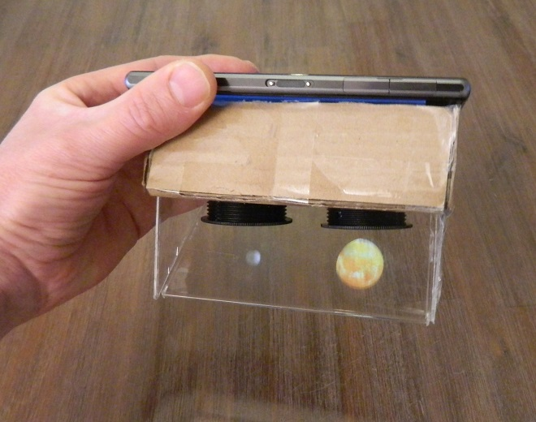
OK Cardboard
By design, in VR you are not connected with the real world - you cannot see the real world and the VR world at the same time. I made Solar System for Google Cardboard to explore the possibilities applying AR or MR in Google Cardboard, mixing real world content with simulated content. It worked, but the image of the real world has no perceived variation in depth (only one camera). This is not a bad thing if you want your primary focus to be the 3d simulated world, but if you want a good view of the real world then you would need two cameras. We already see the real world quite well without the use of camera and screen, so I thought about projecting 3d content directly into our view of the real world. Similar to what Google Glass does, except I wanted to use a phone and apply stereoscopic 3d.
The result is the Head-up Cardboard.
The idea is simple: just like Google Cardboard, except the stereoscopic images are reflected via semi-reflective / semi-transparent glass into your field of vision. You see the real world, mixed with holographic-like 3d content.
13th December 2014
Head-up Cardboard Prototype 1
The purpose of this prototype is to simply confirm that a phone can be used for a stereoscopic head-up display, a proof of concept.
Instructions for making Prototype 1:
Head-up Cardboard Prototype 1
The purpose of this prototype is to simply confirm that a phone can be used for a stereoscopic head-up display, a proof of concept.
Instructions for making Prototype 1:
-
Items needed:
-
A piece of cardboard.
-
Two lenses.
The lenses I use are from a ColorCross VR headset.
-
Some semi-reflective / semi-transparent material.
Preferably very thin material.
I did not have such material. I used a CD-cover instead.
It's not perfect, but good enough for proof-of-concept.
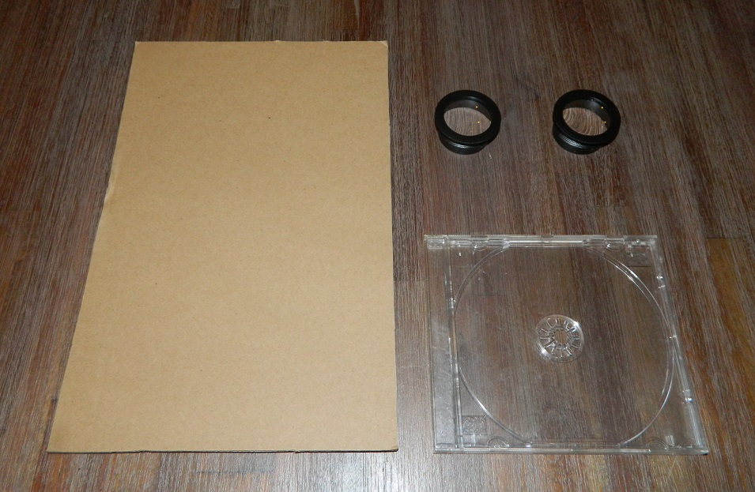
-
A piece of cardboard.
-
- Cut up the cardboard and make a hollow box (using Sellotape).
- Cut holes in the cardboard and position the lenses. The distance between the centers of the holes should be something like 6 cm.
- The height of the box depends on the focal length of the lenses. For my lenses it is 4 cm. To determine the box height for your lenses, simply position the lens above some text and measure the distance between the lenses and the text when the text appears most clear.
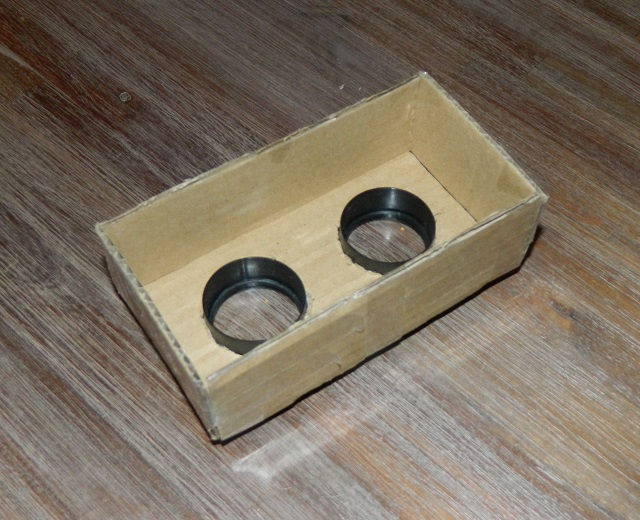 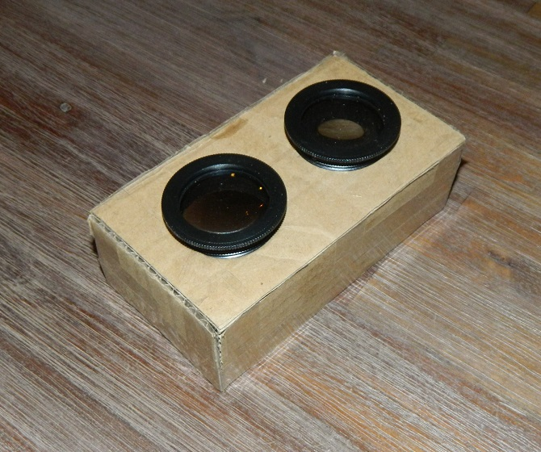
-
- Cut up the semi-reflective / semi-transparent material into pieces as shown in the photo.
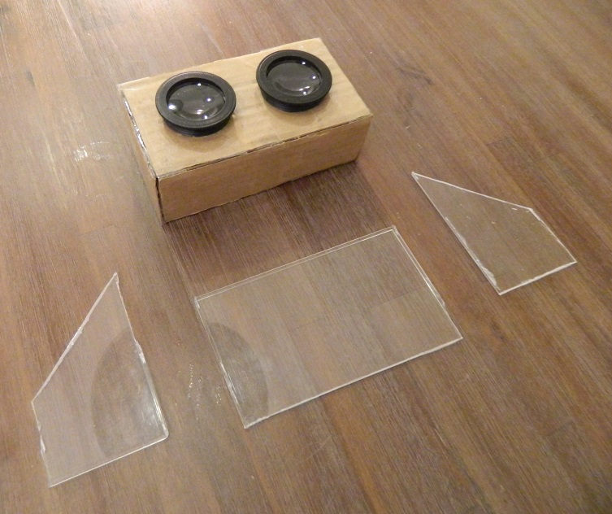
-
- Assemble the pieces as shown in the photo.
- The angle of the 'window' should be 45 degrees.
- Note: the photo shows the lenses inserted wrong way around.
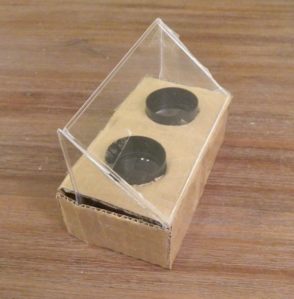
14th December 2014
Testing Prototype 1
To test the proof-of-concept Prototype I made some apps with stereoscopic scenes and images. You can use this to test your own Head-up Cardboard. Note that the scenes and images are flipped, reflected through the horizontal axis. This is necessary to correct for the reflected image.
Here is a web app showing a simple 3d scene (some orbiting planets) to test your Head-up Cardboard with your phone:
Looking through the Head-up Cardboard, with the app running on your phone, you should see something like this:
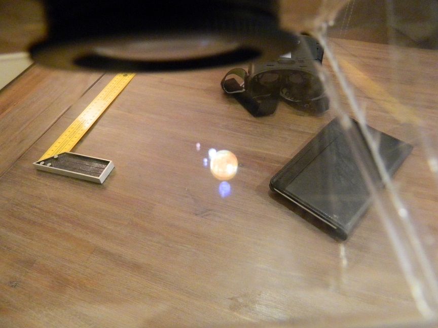
Here a static test image to test your prototype (click and maximize image):
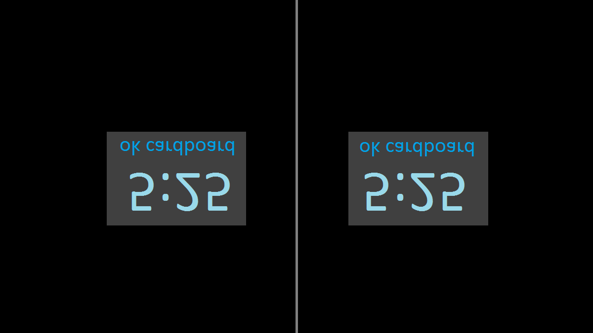
Looking through the Head-up Cardboard, with the test-image full screen on your phone's display, you should see something like this:
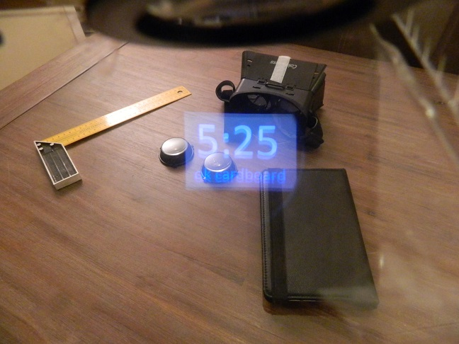
Through the Head-up Cardboard you will see the time and text to appear at slightly different distances, giving a 3d impression.
Testing Prototype 1
To test the proof-of-concept Prototype I made some apps with stereoscopic scenes and images. You can use this to test your own Head-up Cardboard. Note that the scenes and images are flipped, reflected through the horizontal axis. This is necessary to correct for the reflected image.
Here is a web app showing a simple 3d scene (some orbiting planets) to test your Head-up Cardboard with your phone:
Looking through the Head-up Cardboard, with the app running on your phone, you should see something like this:
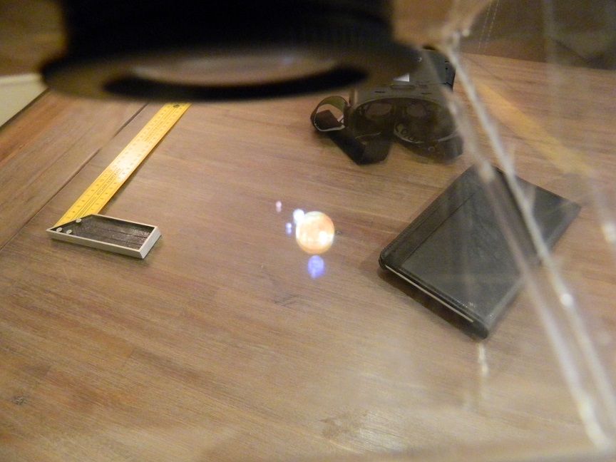
Here a static test image to test your prototype (click and maximize image):
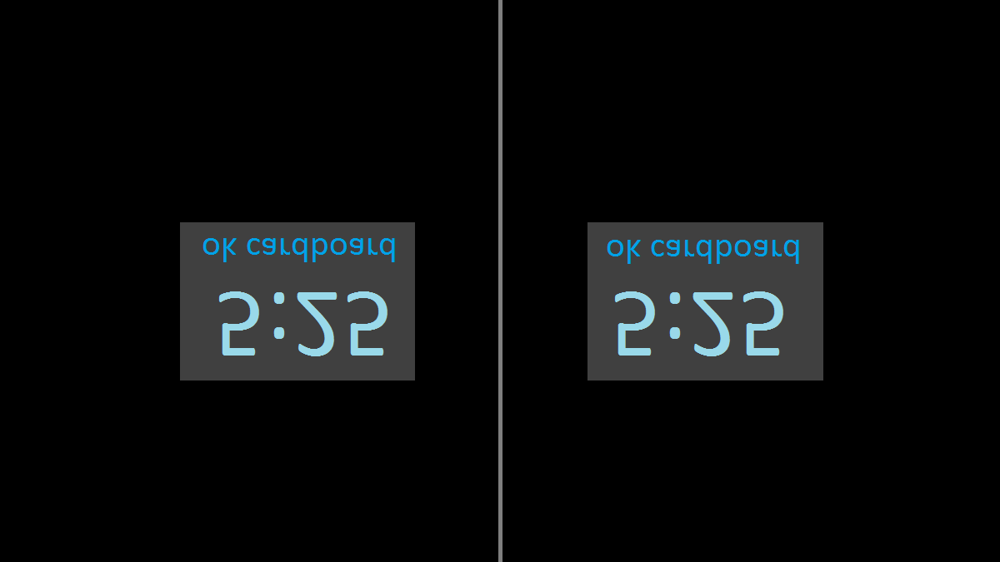
{kind=link}
Looking through the Head-up Cardboard, with the test-image full screen on your phone's display, you should see something like this:
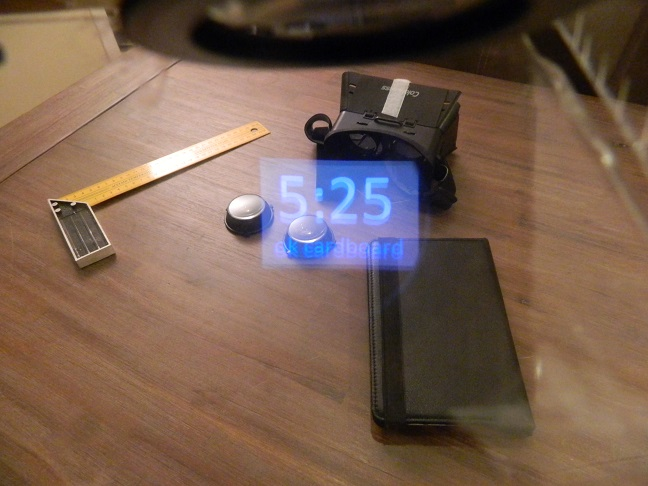
Through the Head-up Cardboard you will see the time and text to appear at slightly different distances, giving a 3d impression.
14th December 2014
Evaluation of prototype 1 - the proof of concept
My findings so far:
Evaluation of prototype 1 - the proof of concept
My findings so far:
- It sort of works! Using Three.js I made some orbiting objects, positioned in the center 20% of the screen. When aligned and focussed correctly, I got the stereoscopic 3d experience, while still being able to see the real world.
- The lens choice is not quite ideal. I am looking into using different types of lenses / curved surfaces.
- Compared to Google Cardboard, the FOV of the Head-up Cardboard is much narrower. This makes it difficult to find objects in 3d space when looking around. Fixed positioned content (independent of orientation or movement of the phone) seems to work well. I am looking into different ways of increasing the FOV, possibly using a curved reflective surface.
-
The CD-cover that was used (see below) is not ideal. First of all it is not quite reflective enough for a good experience.
You need a dark background to see the content. A more suitable material would have a slightly higher degree of reflectivity.
Furthermore, the internal reflection creates a second slightly fainter ghost image.
- A light floor or ground will make the image fade, because light from the bottom reflects back off the phone into sight. A dark casing on the bottom of the device will solve this.
- The image seen through the device is a flipped version of what is on the phone's screen. So the app needs to flip the intended image. This is one of the disadvantages of this prototype, because it is not compatible with Google Cardboard apps. I am also looking into possibilities of creating a double mirror setup such that the image is not a mirror image, so that the apps for this device can also be viewed with standard Google Cardboard.
- The orientation of the device is different from Google Cardboard. So the app needs to interpret the phone's movement differently. The ideal orientation would be to have the same orientation as with Google Cardboard.
- The projected 3d objects give a sensation of depth due to the stereoscopic effect, but misses the differences in focal depth. The objects therefore do not properly mix well into the real world. For a true AR experience we will have to wait for Magic Leap's promising new technology.
17th December 2014
Improvements and variations
The main needs for improvement seem to be: a wider FOV, compatible with Google Cardboard, and better image quality.
Variations of the Head-up Cardboard
There are several variations of the Head-up Cardboard, some of them are listed here. Each has their own set of advantages and disadvantages.
Improvements and variations
The main needs for improvement seem to be: a wider FOV, compatible with Google Cardboard, and better image quality.
-
Increasing FOV
3 possible ways to increase the FOV:
-
Get our eyes closer to the lens.
We cannot get our eyes much closer to the lens, because the lens itself needs to be out of our direct line of sight. -
Increase the size of the lens.
It will be a challenge to find the right size and shape of lens. -
Eliminate the need for a lens.
For the eyes to comfortably be able to focus on the phone's screen without the use of lenses, there are two possibilities:-
Increase the optical distance between eyes and phone.
Increasing the optical distance will result in a decrease of FOV. -
Use a curved reflective surface.
This is functionally equivalent to a lens, so this would seem a good choice, although probably a challenge to make.
-
Increase the optical distance between eyes and phone.
-
Get our eyes closer to the lens.
-
Compatible with Google Cardboard
Apps for prototype 1 must mirror the image horizontally, because the image is reflected. This is not compatible with Google Cardboard. The only way I could think of to be compatible with Google Cardboard is to use two reflectors, put together like a periscope. The bottom mirror (the "combiner") is semi-reflective, and the top mirror is fully reflective.
-
Better image quality
To reduce the ghost image we need first-surface mirrors and very thin glass.
Variations of the Head-up Cardboard
There are several variations of the Head-up Cardboard, some of them are listed here. Each has their own set of advantages and disadvantages.
Concept 1
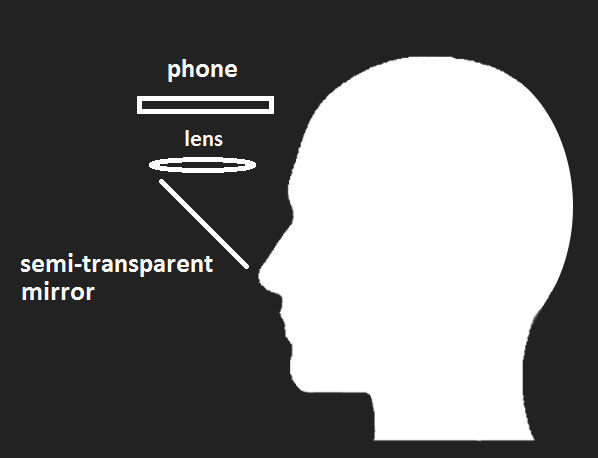
Concept 1 is prototype 1.
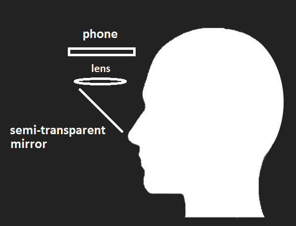
Concept 1 is prototype 1.
Concept 2
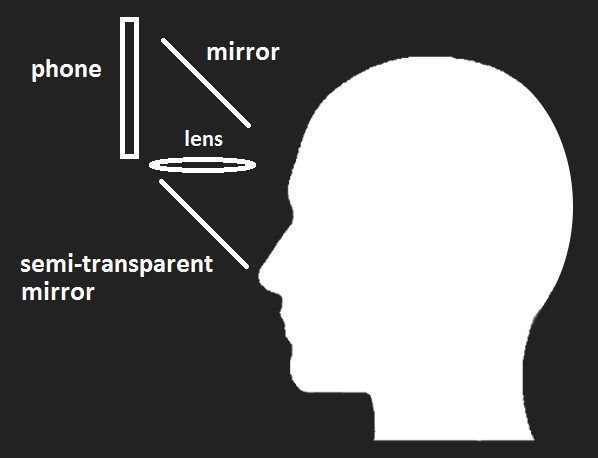
Concept 2 is constructed like a periscope, using a semi-reflective mirror and a fully-reflective mirror.
Compatible with Google Cardboard.
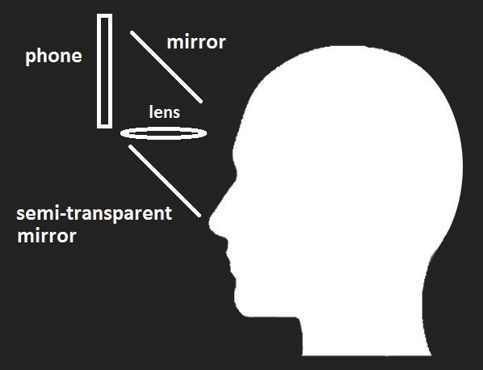
Concept 2 is constructed like a periscope, using a semi-reflective mirror and a fully-reflective mirror.
Compatible with Google Cardboard.
Concept 3
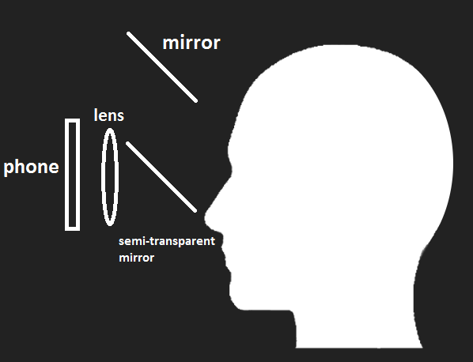
Concept 3 is a reversed version of concept 2, places the FOV of the real world above the normal line of sight.
Compatible with Google Cardboard.
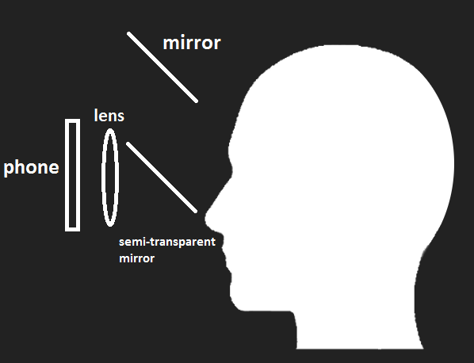
Concept 3 is a reversed version of concept 2, places the FOV of the real world above the normal line of sight.
Compatible with Google Cardboard.
Concept 4
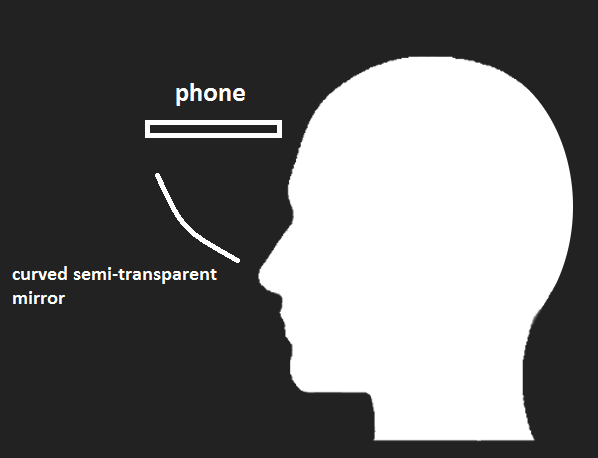
Concept 4 uses a curved semi-transparent mirror, doubling as a lens, possibly eliminating the need for a lens.
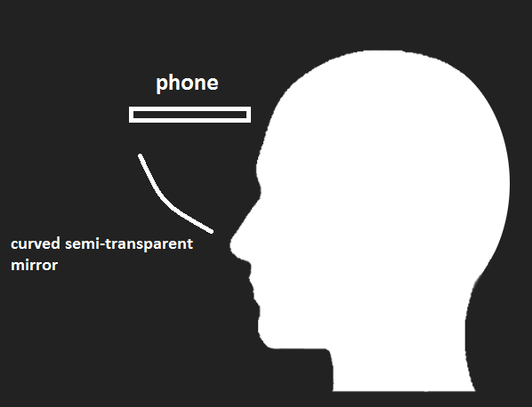
Concept 4 uses a curved semi-transparent mirror, doubling as a lens, possibly eliminating the need for a lens.
20th December 2014
Constructing mirrors for concept 2
I am very fortunate to know Tatjana J. van Vark, who is (among many other subjects) an expert on the subject of optics and vacuum coating. She has a vacuum coating machine (actually fully built by herself). Tatjana made two mirrors:
Here are some photos of the process, and of the wonderful vacuum coating machine made by Tatjana J. van Vark:
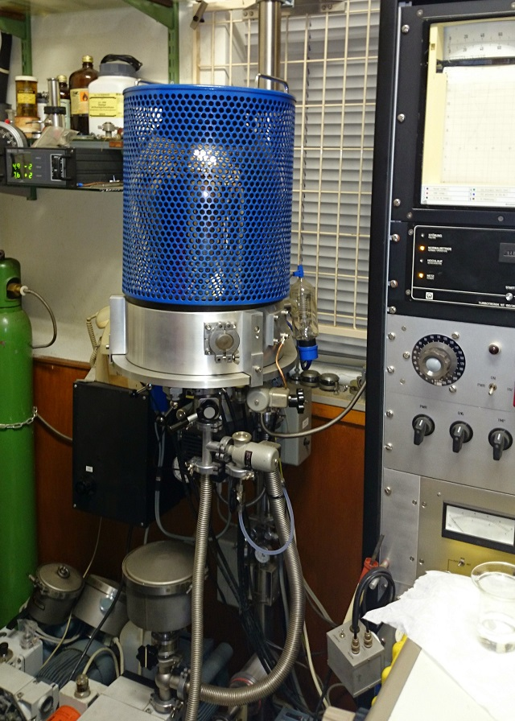 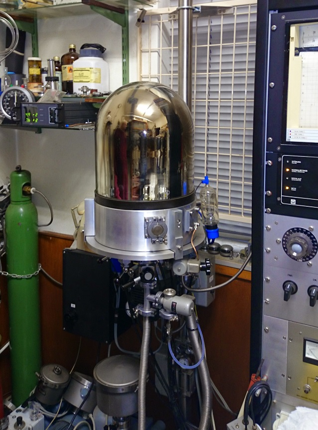 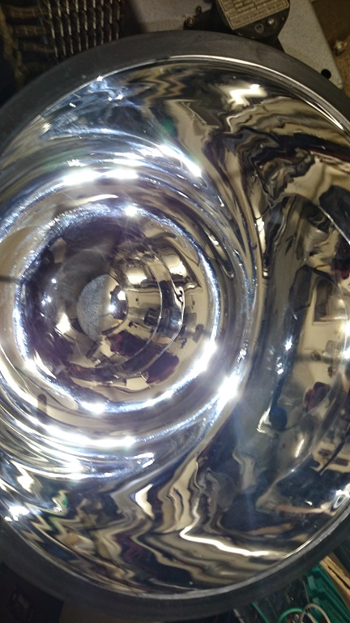 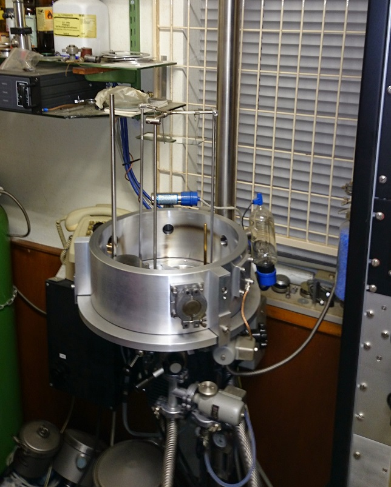
Constructing mirrors for concept 2
I am very fortunate to know Tatjana J. van Vark, who is (among many other subjects) an expert on the subject of optics and vacuum coating. She has a vacuum coating machine (actually fully built by herself). Tatjana made two mirrors:
-
A 100% fully reflective vacuum coated first surface mirror.
Thin glass plate vacuum-coated with aluminium. -
The combiner: a semi-reflective mirror (beam-splitter).
Thin glass plate vacuum-coated with an extreme thin layer of aluminium for the semi-reflective side, and a thin layer of Magnesium Fluoride for the non-reflective side (anti-reflective coating, destructive thin-film interference).
Target: 50% transmission
Result: 44% transmission (a very good result!)
Here are some photos of the process, and of the wonderful vacuum coating machine made by Tatjana J. van Vark:
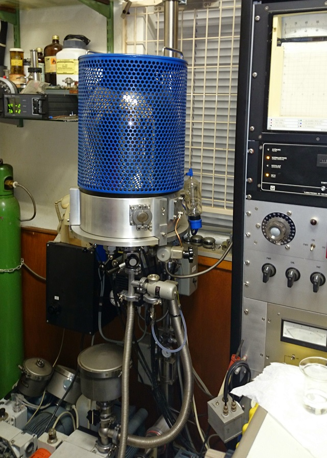 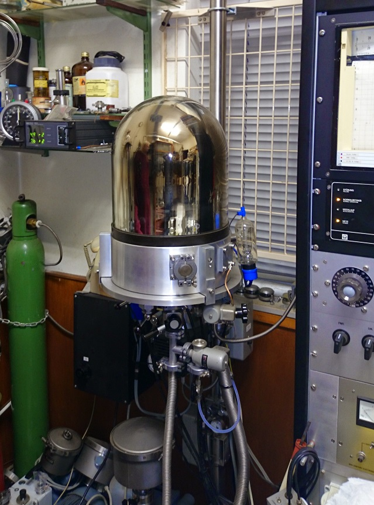 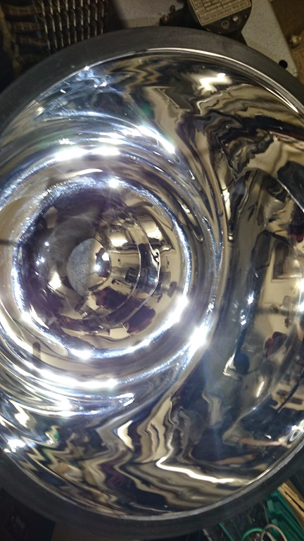 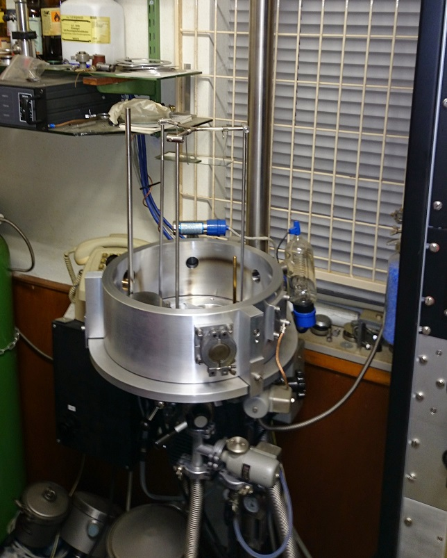
20th December 2014
The mirrors
The resulting mirrors:
The mirrors
The resulting mirrors:
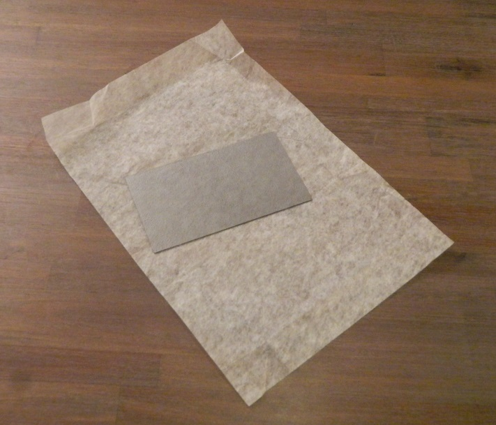
Semi-reflective mirror
The beam splitter or combiner. A thin glass plate, vacuum-coated with an extreme thin layer of aluminium for the semi-reflective side, and a thin layer of Magnesium Fluoride for the non-reflective side (anti-reflective coating, destructive thin-film interference).
Semi-reflective mirror
The beam splitter or combiner. A thin glass plate, vacuum-coated with an extreme thin layer of aluminium for the semi-reflective side, and a thin layer of Magnesium Fluoride for the non-reflective side (anti-reflective coating, destructive thin-film interference).
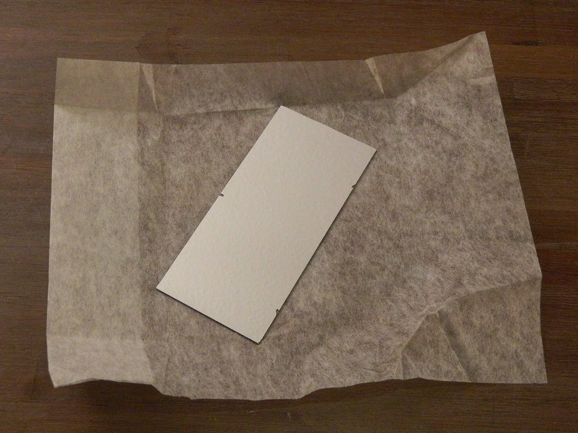
Fully reflective first surface mirror
Thin glass plate vacuum-coated with aluminium.
Fully reflective first surface mirror
Thin glass plate vacuum-coated with aluminium.
21st December 2014
Testing the mirrors
The mirrors were tested in a simple proof-of-concept Lego model of concept 2. It is a flimsy construction, but it works well enough to test the mirrors. First impression: The mirrors work great, they blend the real image with the augmented image very well.
Testing the mirrors
The mirrors were tested in a simple proof-of-concept Lego model of concept 2. It is a flimsy construction, but it works well enough to test the mirrors. First impression: The mirrors work great, they blend the real image with the augmented image very well.